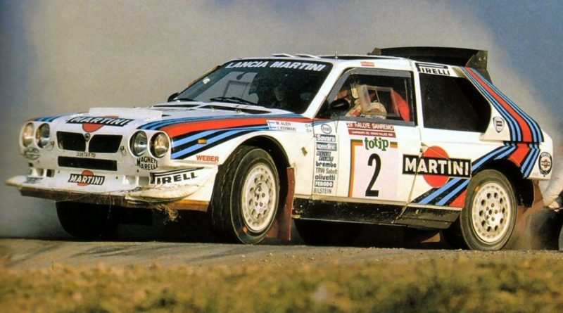
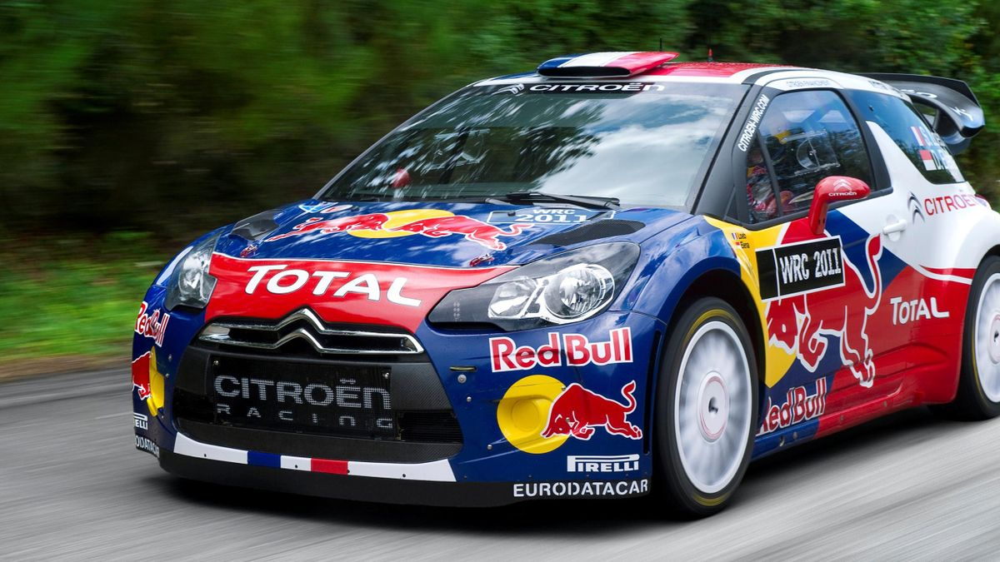

Qui sommes nous ?
Nous sommes un groupe de 4 passionnés d'automobile qui se sont lancés dans la création d'un blog présentant des voitures de rally de tout genre et de toute époque. Ici, vous aurez la possibilité de découvrir quelques des voitures les plus mythiques du monde du rally. Malheuresement, ce site est tout neuf et est en cours de construction, mais vous y retrouverez déjà 3 articles différents, ainsi que l'ensemble des pages
La Lancia Delta S4, voiture légendaire de courses légendaires
La Lancia Delta S4 est une voiture typée rally très connue pour avoir concourue dans le groupe B automobile à partir de 1985, mais aussi pour avoir couru à sa perte. Produite à uniquement 200 exemplaire, c’est une des voitures de rally les plus rare au monde, Lancia n’ayant pas réussi à écouler les 200 exemplaires homologués pour la route requis pour se qualifier au groupe B. Lire plus
Le 1000tipla, un projet ambitieux
Le Fiat 1000tipla est un projet lancé en 2020 ayant pour but de produire et mettre en course un Fiat Multipla avec un moteur de 1000 chevaux (comparable à une Bugatti Veyron). Financé par une campagne de dons, le projet a atteint la somme de 1 million d’euros !
Les créateurs du projet sont deux vidéastes sur la plateforme YouTube : Vilebrequin par Sylvain Levy et Pierre Chabrier. Avant la mise en projet du moteur de 1000 chevaux, ils ont réduit le poids du véhicule de 400 Kg en retirant tous les composants inutiles comme les sièges arrière... Lire plus
L'incroyable Citroën DS3 WRC sur Terre comme dans le Ciel:
Remplacante de la C4 WRC, elle est entrée en compétition depuis 2011 avec comme utilisateur "Sébastien Loeb", doté d'un super moteur, ce véhicule a remporté de nombreuses épreuves, dont plusieurs championnat du monde des Rallyes, soit 9 titres pour Sébastien Loeb et son copilote et sept pour Citroën. Cette Citroën a des parechocs et des ailerons qui ont été redessinés et optimisés en soufflerie...Lire plus